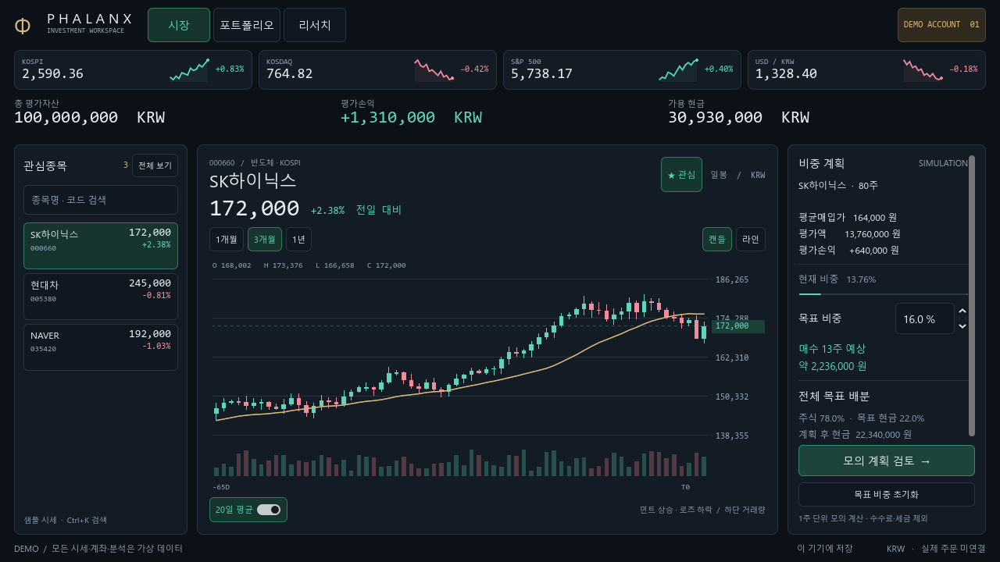
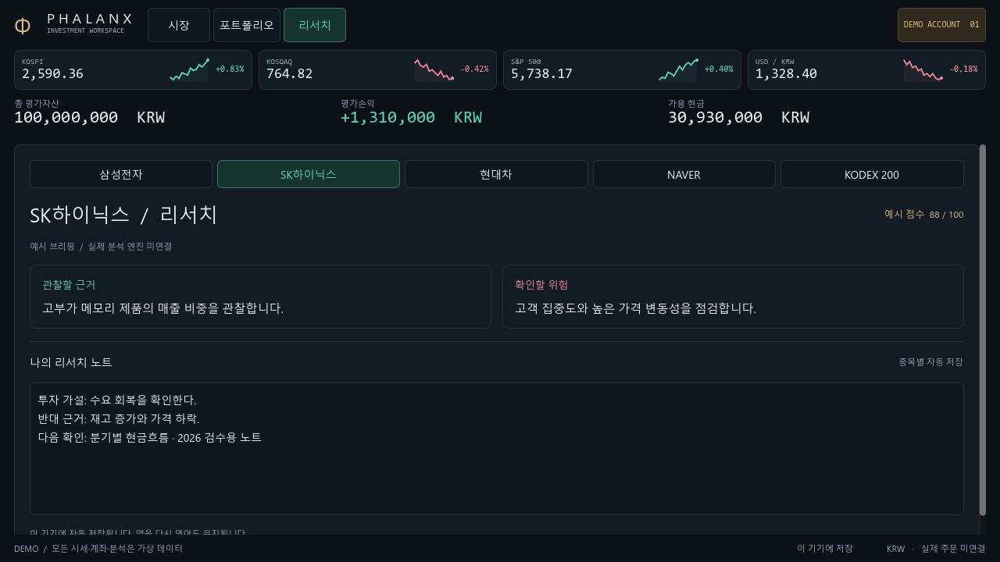

PHALANX / SAVED WORKSPACE
앱을 다시 열어도 관심종목과 노트가 이어집니다.
관심종목 추가·해제, 종목별 자동 저장, 저장 상태와 재시도를 기존 Godot 투자 화면에 연결했습니다.
관심종목 · 리서치 노트 · 이 기기에 자동 저장관심목록 복원
첫 실행에서 삼성전자와 KODEX 200을 해제한 뒤 정상 종료했습니다. 새 프로세스에서 남은 3개 종목이 복원된 실제 GPU 화면입니다. 전체 보기와 검색으로 해제한 종목도 다시 찾을 수 있습니다.

종목별 노트 복원
종료 직전에 입력한 SK하이닉스 노트가 새 프로세스에서도 그대로 표시됩니다. 노트는 화면 이동·관심 해제와 독립적으로 유지됩니다.

위 이미지는 자동으로 상태를 준비한 실제 GPU 렌더입니다. 별도로 1280×720 실제 Windows 창에서 관심 해제·한국어 입력·정상 종료·재실행 복원을 컴퓨터 사용 도구로 확인했습니다. 모든 금융 값은 가상 데이터입니다.
사용법 · 저장 위치 · 검증 기록 · 좁은 화면 확인